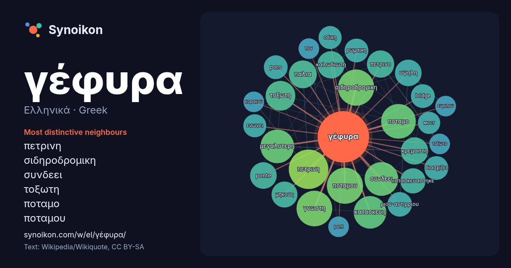

Ελληνικά · Greek · word of the day list
γέφυρα
“bridge” · The words found around it in 1413 instances from Greek Wikipedia, Wikiquote.

Most distinctive neighbours
- πετρινη 41×
- σιδηροδρομικη 34×
- συνδεει 28×
- τοξωτη 25×
- ποταμο 25×
- ποταμου 23×
- καλωδιωτη 21×
- κρεμαστη 21×
- ponte 20×
- πετρινο 20×
- ριου-αντιρριου 18×
- pons 17×
- bridge 16×
- γνωστη 16×
- οδικη 15×
- διασχιζει 15×
- ενωνει 15×
- υψηλη 15×
- κατασκευη 15×
- παλια 15×
× = how many times more often than in general Greek Wikipedia text.
Most frequent neighbours
- βρισκεται 61
- πετρινη 44
- ποταμου 37
- σιδηροδρομικη 37
- γνωστη 36
- δυο 35
- ποταμο 34
- μεγαλυτερη 32
- συνδεει 32
- κατασκευη 30
- μετρα 28
- μηκος 28
- πανω 28
- νεα 27
- τοξωτη 25
- κοσμο 22
- παλια 22
- καλωδιωτη 21
- κρεμαστη 21
- πετρινο 21
In context
- Για άλλες χρήσεις, δείτε: Γέφυρα (αποσαφήνιση). Η γέφυρα είναι μία αρχιτεκτονική ή τεχνική κατασκευή με την οποία επιτυγχάνεται ζεύξη δύο ή περισσοτέρων Wikipedia snippets · Γέφυρα
- 3214°N 21.7728°E / 38.3214; 21.7728 Η Γέφυρα Ρίου-Αντιρρίου, επίσημα Γέφυρα «Χαρίλαος Τρικούπης», είναι καλωδιωτή γέφυρα που ολοκληρώθηκε και τέθηκε σε λειτουργία Wikipedia snippets · Γέφυρα Ρίου-Αντιρρίου
- 114194 Η Γέφυρα Ντιάβολσκι (βουλγάρικα: Дяволски мост, μτφ «η γέφυρα του διαβόλου» ή «διαβολική γέφυρα», τουρκικά: Şeytan Köprüsü) είναι τοξωτή γέφυρα επί Wikipedia snippets · Γέφυρα Ντιάβολσκι
- Η γέφυρα Έρεσουντ (δανικά: Øresundsbroen, σουηδικά: Öresundsbron, μεικτό υβριδικό όνομα: Øresundsbron), ή Όρεσουντ (στα Αγγλικά), είναι γέφυρα με σιδηρόδρομο Wikipedia snippets · Γέφυρα Έρεσουντ
- Η γέφυρα της Κριμαίας (ρωσικά: Крымский мост, [ˈkrɨmskʲij most]), που ονομάζεται επίσης γέφυρα του πορθμού του Κερτς ή γέφυρα του Κερτς, είναι ζεύγος Wikipedia snippets · Γέφυρα της Κριμαίας
- τύπου, είναι η γέφυρα Ρίου-Αντιρρίου, έχει 4 πυλώνες και η απόσταση μεταξύ των πυλώνων είναι 560 μέτρα, είναι η δεύτερη μεγαλύτερη γέφυρα αυτού του τύπου Wikipedia snippets · Καλωδιωτή γέφυρα
- RIF τη σειρά των γεφυρών και τοπικών δικτύων που πρέπει να χρησιμοποιηθούν για την παράδοση του πακέτου στον προορισμό του. Η γέφυρα διαβάζει τις πληροφορίες Wikipedia snippets · Γέφυρα δικτύου
- 04556°W / 40.60639; -74.04556 Η γέφυρα Βερρατσάνο Νάροους (στα αγγλικά: Verrazano Narrows Bridge) είναι διώροφη κρεμαστή γέφυρα που συνδέει τους δήμους του Wikipedia snippets · Γέφυρα Βερρατσάνο Νάροους
More Greek words
Precomputed on 2026-10-09 with default settings (±5 words, medium corpus). The interactive map can refresh it with live data.